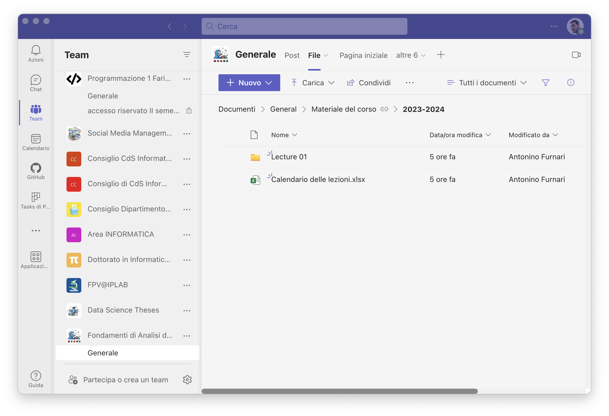

Fondamenti di Analisi dei Dati 2023/2024#
Introduzione al Corso#
Prof. Antonino Furnari#
http://antoninofurnari.it University of Catania Dept. of Maths and Computer Science

Informazioni Generali#
Nome del corso: Fondamenti di Analisi dei Dati;
Docente: Antonino Furnari
CFU: 9
Orario delle lezioni: Martedì e Giovedì 15.00-18.00
Luogo delle lezioni: Aula 23
Materiale didattico e annunci: su Microsoft Teams (codice i87g4nb)
Ricevimento: Lunedì 14.00-16.00 – controllare disponibilità e prenotarsi qui: http://antoninofurnari.it/ricevimento
Organizzazione del Corso#
Due moduli:
Due tipi di lezioni:
Frontali - su concetti teorici, con l’ausilio di slide o lavagna digitale
Laboratorio - esempi pratici di utilizzo di librerie e analisi dei dati
Modulo Teorico (6 CFU)#
Mira a fornire le competenze teoriche e formali per imparare a raccogliere, organizzare, modellare, analizzare e interpretare i dati.
Si svolge attraverso lezioni frontali mediante slide o lavagna (tablet).
Materiale di riferimento: capitoli di libri e dispense del docente.
Modulo di Laboratorio (3 CFU)#
Mira a fornire le competenze tecniche per effettuare analisi dei dati mediante strumenti e librerie basate su Python.
Si svolge attraverso lezioni di laboratorio che gli studenti possono seguire mediante i loro laptop.
Materiale di riferimento: materiale fornito dal docente, risorse in rete.
Materiale Didattico - Note online#

Parte del materiale didattico sarà disponibile online al seguente url: https://antoninofurnari.github.io/fadlecturenotes/
Questo includerà alcune note teoriche e tutti i notebook jupyter utilizzati per i laboratori
Materiale Didattico - Microsoft Teams#

Il restante materiale didattico sarà condiviso mediante Microsoft Teams
Microsoft Teams sarà anche utilizzato per tutte le comunicazioni ufficiali del corso
Codice del team: i87g4nb
Libri#
Verranno di volta in volta indicati capitoli dei seguenti libri:
Heumann, Christian, and Michael Schomaker Shalabh. Introduction to statistics and data analysis. Springer International Publishing Switzerland, 2016.
James, Gareth Gareth Michael. An introduction to statistical learning: with applications in Python, 2023.https://www.statlearning.com
Bishop, Christopher M. “Machine Learning. Machine learning, 2006. https://www.microsoft.com/en-us/research/publication/pattern-recognition-machine-learning/
Hernán, Miguel A., and James M. Robins. Causal inference, 2010. https://www.hsph.harvard.edu/miguel-hernan/causal-inference-book/
Modalità d’Esame#
L’esame consiste in due prove distinte:
Un progetto che consiste nell’analisi di un set di dati concordato col docente.
Colloquio orale per la presentazione del progetto e verifica della conoscenza degli argomenti del corso.
Le prove possono essere sostenute in date concordate con il docente, fuori dal periodo di lezione. Le date ufficiali sono generalmente garantite.
Comunicazione con il Docente#
Le comunicazioni ufficiali sul corso da parte del docente avverranno mediante Microsoft Teams;
Gli studenti possono comunicare con il docente mediante messaggi privati (o pubblici se di interesse generale) di Microsoft Teams o via email all’indirizzo antonino.furnari@unict.it;
Utilizzare inidirizzo studium di Ateneo;
Firmarli alla fine della mail;
Identificarsi in relazione al corso (sono studente di corso X);
Rileggere la mail prima di spedirla 😉.